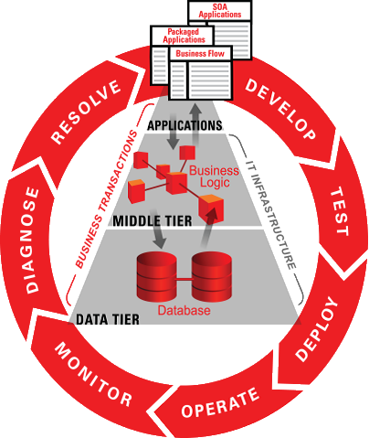
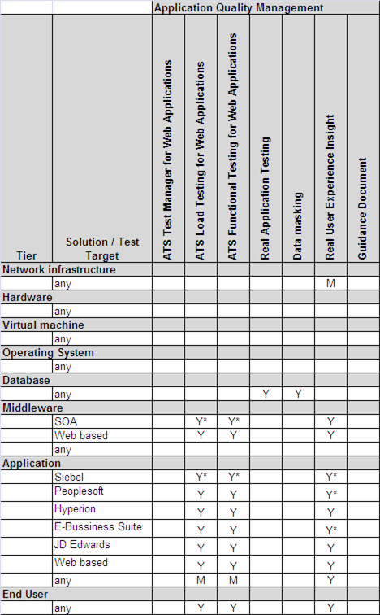

OUM |
Testing and Quality Management Tools Supplemental Guide |
||
Method Navigation |
Current Page Navigation |
||
|
|
||||||||
Oracle Application Testing Suite (OATS) is an open and integrated scripting platform for both load and functional testing as well as test management, using OATS functional testing can be automated, load testing can be done with minimal effort and requirements and defect management can be achieved with minimal effort.
Use this link for a recorded overview presentation of Oracle Application Testing suite.

The task of defining test plans, acceptance criteria, testing deliverables and processes for any software development effort can face many different and evolving challenges, from identifying applicable processes to maintaining those decisions over time. Using a tool to centralize that information is highly recommended, Oracle offers OTM (Oracle Test Management) as a centralized solution for your test requirements, deliverables and issue tracking.
OpenScript functional module is used to create functional tests scripts, using the functional module OpenScripts, scripts will replay and validate user interactions with the application trough the browser, by clicking on links, buttons and validating content as well as application functionality. OpenScript is the next generation scripting platform for Oracle Application Testing Suite, which can create automated test scripts for load testing and functional testing.
Combines an intuitive graphical scripting interface with a powerful Java IDE for creating test scripts providing much greater scripting flexibility while maintaining ease-of-use
Oracle Load Testing allows you to easily test the performance and scalability of your Web applications and Web services. Oracle Load not only stresses your application to simulate the impact of end-user workloads, but also enables rigorous validation. Its integrated scripting platform cuts scripting time in half, eliminating weeks from a project’s testing schedule. Oracle Load Testing is a component of Oracle Application.
Testing Suite, the centerpiece of the Oracle Enterprise Manager solution for comprehensive testing of packaged, Web and service-oriented architecture–based applications.
The following table is a mapping between the ATS tools and the applications suites to which they can be applied.

| KEY | Tool Applicability to Product Suites |
|---|---|
Y |
Yes |
Y* |
Yes, accelerator available |
M |
Maybe/possibly under some circumstances |
Contact HELPSAM_WW@ORACLE.COM for information about Oracle Testing and Quality Management Tools.

Copyright © 2006, 2016, Oracle and/or its affiliates. All rights reserved.